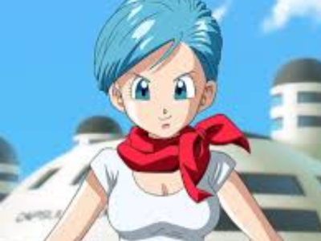

Bulma
Bulma é uma personagem central na franquia Dragon Ball, criada por Akira Toriyama. Ela é uma cientista talentosa e uma das fundadoras dos Guerreiros Z, sendo uma presença constante ao lado de Goku e seus amigos ao longo de suas aventuras. Desde sua primeira aparição na série, Bulma é retratada como uma jovem inteligente, determinada e confiante. Ela é conhecida por sua mente brilhante e sua habilidade de inventar tecnologias avançadas que frequentemente ajudam os Guerreiros Z em suas batalhas contra vilões poderosos.